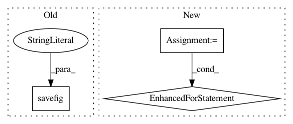

b0ddb103fd66542b0232718b1833ea7551c56f5e,test_sweep.py,,,#,21
Before Change
import matplotlib.pyplot as plt
plt.plot(num_points,psnrs_mean,"bo-")
plt.xscale("log")
plt.savefig("tmp.png")
// print("points: %.2f+/-%.2f"%(mean_points,std_points))
embed()
After Change
// print calculate_psnr_np(util.tensor2im(visuals["real"]),util.tensor2im(visuals["fake_reg"]))
// print calculate_psnr_torch(visuals["real"],visuals["fake_reg"])
old_psnrs = [[np.load("psnrs_mean_08_19_2000.npy"),"08_19_2000"],
[np.load("psnrs_mean_08_20_0000.npy"),"08_20_0000"]]
LOAD_DIR = "/data/big/rzhang/src/pix2pix_stroke/tests_auto/random"
old_results = np.concatenate([np.load("%s/default_random_0_caffe_%04d_%04d_psnrs.npy"%(LOAD_DIR,a,a+100)) for a in range(0,1000,100)])
old_mean = np.mean(old_results, axis=0)
old_std = np.std(old_results, axis=0)/np.sqrt(old_results.shape[0])
import matplotlib.pyplot as plt
plt.close("all")
for (old_psnr,oo) in old_psnrs:
plt.plot(num_points,old_psnr,"k-",label=oo)
plt.plot([num_points[0],num_points[-1]],[old_psnr[0],old_psnr[0]],"k-",label="%s (auto)"%oo)
plt.plot(num_points,psnrs_mean,"bo-",label="new")
plt.plot(num_points,psnrs_mean+psnrs_std,"b--")
plt.plot(num_points,psnrs_mean-psnrs_std,"b--")
plt.plot([num_points[0],num_points[-1]],[psnrs_mean[0],psnrs_mean[0]],"b-",label="new (auto)")
In pattern: SUPERPATTERN
Frequency: 3
Non-data size: 3
Instances
Project Name: richzhang/colorization-pytorch
Commit Name: b0ddb103fd66542b0232718b1833ea7551c56f5e
Time: 2018-08-20
Author: rzhang88@gmail.com
File Name: test_sweep.py
Class Name:
Method Name:
Project Name: tensorlayer/tensorlayer
Commit Name: 16a31e2c9fedc654e9117b42b8144adf1d0e4900
Time: 2020-02-03
Author: 34995488+Tokarev-TT-33@users.noreply.github.com
File Name: examples/reinforcement_learning/tutorial_A3C.py
Class Name:
Method Name:
Project Name: jaakkopasanen/AutoEq
Commit Name: 3ecb4a4df1def4c9496bd676adad3564f746a02d
Time: 2018-07-08
Author: jaakko.o.pasanen@gmail.com
File Name: innerfidelity/innerfidelity_transformation.py
Class Name:
Method Name: main